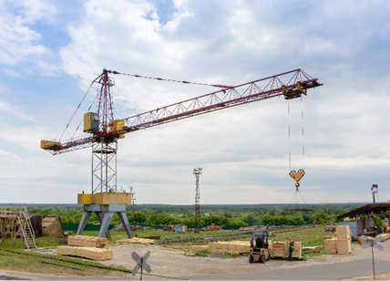
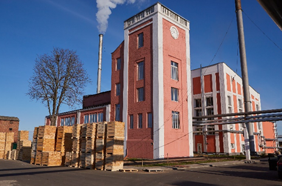
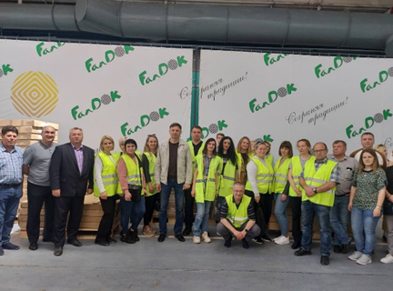
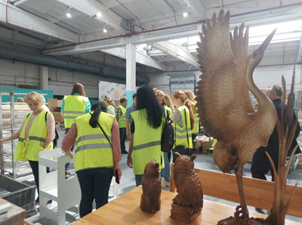
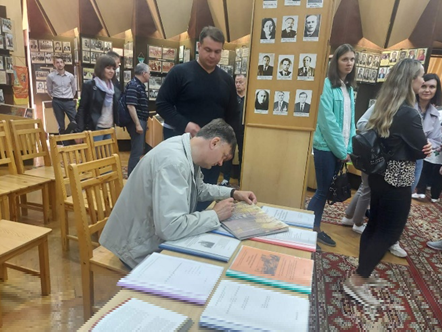
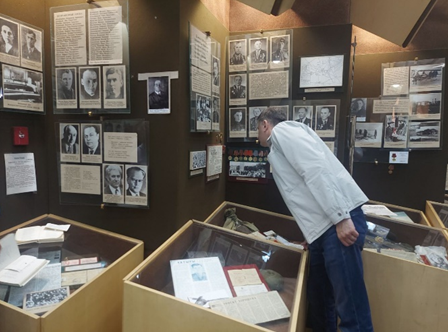

О нас
Мы разработали персональный экскурсионный маршрут под каждую группу посетителей. Дети и подростки заглянут в мир производства, где увидят и поймут, как создаётся продукция и смогут принять активное участие в производственном процессе, а взрослых мы познакомим с технологиями производства, поделимся некоторыми секретами и развеем стереотипные мифы о продукции.
Маршрут включает в себя посещение таких мест, как:
Цех по производству клееной фанеры
Покажем ход изготовления фанеры: как идёт подготовка древесины, заготовка и лущение шпона (это самый эффектный технологический процесс), склеивание шпона в листы и другие рабочие потоки. Наши посетители смогут увидеть модернизированный и усовершенствованный технологический процесс, благодаря которому продукция компании пользуется популярностью не только на территории РБ, но и за ее пределами.


Цех по производству мебельной продукции из массива
Познакомим с развитием производства и технологическим процессом по изготовлению мебели. У вас на глазах будут изготовлены изделия, которые отправляются в 19 стран мира, их можно не только увидеть, но и протестировать. Научим как отличать массив дерева, расскажем про основные преимущества мебели из массива для дома, покажем эксклюзивные модели, которые сделаны по спецзаказам. Резчики проведут мастер-класс по высокохудожественной резке, где каждый сможет попробовать себя в творческом ремесле.


Музей трудовой славы
Открыт 9 октября 1985 года. В мае 2008 г. ему присвоено почётное звание «народный». Музей насчитывает свыше 1350 уникальных экспонатов, десятки стендов, тысячи фотографий. В его экспозициях показано начало строительства комбината, работа ударников и стахановцев лесопиления в 30-е годы 20-го столетия, героизм работников комбината - участников Великой Отечественной войны трудовой и боевой славы ОАО «ФанДОК». Каждому посетителю мы предоставим возможность оставить памятные записки.

